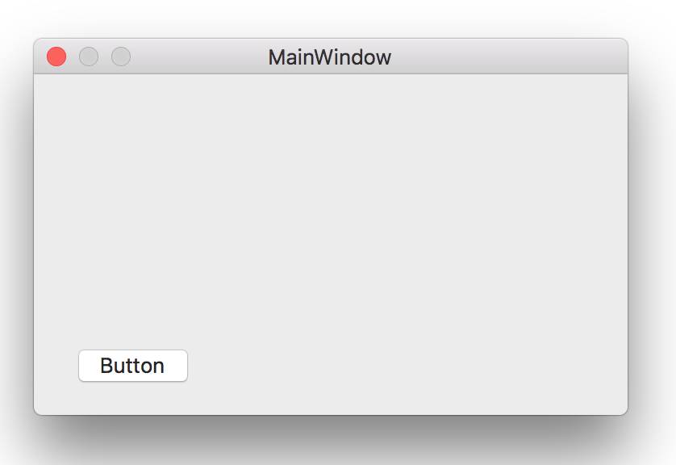

ウィンドウをマウスドラッグにより移動する

画像をクリックすると動画になります。
マウスのドラッグに合わせてウィンドウを移動する。ウィンドウの移動はウィンドウオブジェクトのプロパティ（window.frame.origin）を変化させることで可能である。
ウィンドウのコンテントビューに以下のコードを追加する。
[注意]
ボタンの周縁部をクリックしたとき、数ピクセル程度の範囲であるが、
mouseDownイベントは発生しないが、mouseDraggedイベントとmouseUpイベントが発生するという奇妙な動きになる。そのためボタンの周縁部をクリックしたときは何もしない対応をしている。